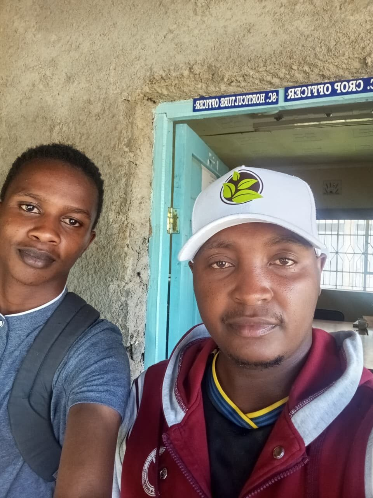
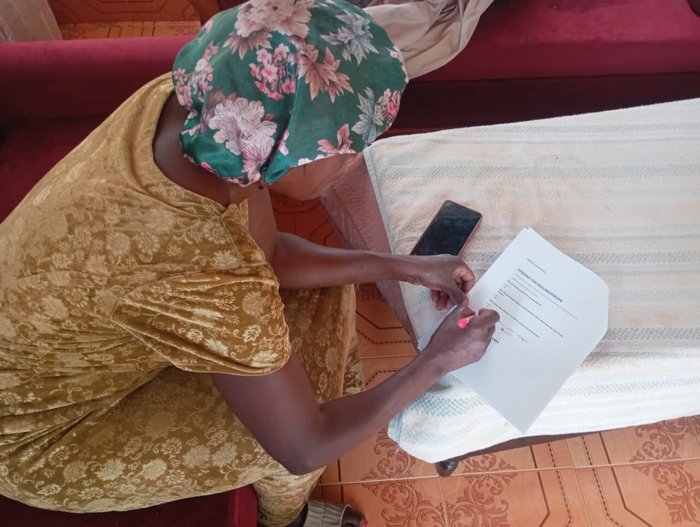
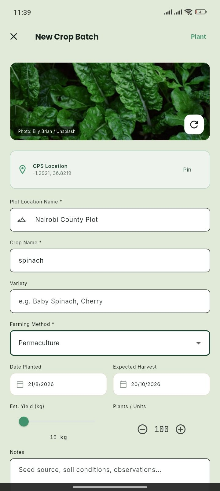

Listening before building.
GreenTrack is being shaped not only by code, but by conversations in the field. These stories document the people, observations and experiences that are helping define what the technology should become.

Stories from the people behind your food.
Photo / Field Documentation — George Ngugi. Jonathan Chomba, coffee farmer, Subukia.
Jonathan Chomba: Following the Journey of a Coffee Bean
A field conversation with a Kenyan Arabica coffee farmer revealed just how much information travels with a coffee harvest — from the farm, through a wet mill and a dry mill, to an auction floor, and finally to a buyer.
Read the Story →
Beyond the Harvest: What Erah Chomba Needed GreenTrack to Do Next
Erah Chomba grows spinach and cabbages in Subukia. Watching her work through GreenTrack for the first time — and hearing what she asked for next — reshaped how this app thinks about usability and market access.
 George Ngugi, on one of the same field visits
George Ngugi, on one of the same field visitsWhy This Developer Goes Into the Field Before Building
Software development paired with direct field research — meet the person behind both, and the plots he's visited to get here.
Inside This Issue
- Field Beyond the Harvest: What Erah Chomba Needed GreenTrack to Do Next
- Field Jonathan Chomba: Following the Journey of a Coffee Bean
- Field What John Maina's Three Crops Have in Common
- Field What Grace Wanjeri Wants to Know Before the Produce Arrives
- Field What Agnes Kariuki Wants to Know Isn't on the Label
- Field The Field Gallery — Every Photograph, Every Voice
- Tech Everything Between a Seed and a Receipt
- Team The Newsroom — Who's Behind GreenTrack
From an idea about food to a product shaped by farmers
Exploring the garden-to-table problem
GreenTrack started as a broader idea — connecting the journey from growing food to understanding, tracking, and eventually consuming it, across farmers, chefs, diners and shoppers.
Speaking with people involved in agriculture and food
Rather than design entirely from behind a computer, field visits around Subukia, Kenya put the product in front of the people it was meant to serve.
Identifying real problems and usability barriers
Conversations with growers like Erah Chomba and Jonathan Chomba surfaced gaps no amount of desk research would have found — from interface friction to the need for market access.
Refocusing around the farmer / gardener experience
What began as a multi-role concept narrowed into a sharper focus on the grower's side of the journey — crop tracking, plot management, crop health, and nutrition.
Turning field insights into practical software
Features like the nutrition calculator and pest/crop-health scanning were tested directly with growers in the field, not just imagined at a desk.
Returning to users and refining the product
Field research isn't a one-time step. Each conversation — including the ones documented on this page — continues to shape what GreenTrack builds next.
What the Field Taught Me
Observations from the visits documented on this page — not fabricated statistics, just what came out of the conversations themselves.
Technology must be understandable
A feature is only useful if the intended user can comfortably reach and use it — something Erah's first minutes with the app made hard to ignore.
Farmers need more than records
Tracking crops and harvests is valuable, but farmers also need practical support around what happens after harvesting — starting with finding a market.
Market access matters
Erah's request for help finding markets showed that production and selling can't always be treated as separate problems.
Nutrition connects farming to consumption
The nutrition calculator gave growers a way to see their harvest as food with value — not just a quantity logged in an app.
Build with people, not assumptions
Jonathan's coffee plot exposed a problem that would have been easy to miss designing only from a developer's perspective: not every crop behaves the same way.
More Voices From the Same Week in the Field
Not every conversation became a full article — but every photograph here is real documentation from the same GreenTrack field research trip around Subukia. Click any photo for a closer look, or see the full field gallery →
Erah Chomba, grower — SubukiaJonathan Chomba, coffee farmer
A visit to the Sub-County horticulture office Grace Wanjeri, at her stall
Grace Wanjeri, at her stall A grower, among his maize
A grower, among his maize
Signing consent for documentation Coffee rows, Subukia
Coffee rows, Subukia Spinach, early growth
Spinach, early growth John, beneath his banana tree
John, beneath his banana tree Working the spinach beds
Working the spinach beds
Logging a batch, in the field Jonathan, working the rows
Jonathan, working the rows John Maina, among his maizeJohn, beneath his banana tree
John Maina, among his maizeJohn, beneath his banana treeGeorge Ngugi
Software Developer · Field Researcher · Product BuilderGeorge combines software development with direct field research to understand real-world problems before building technology to address them. Rather than design GreenTrack purely from behind a screen, he visited growers around Subukia — Erah Chomba, Jonathan Chomba, and others documented on this page — to see how the app actually holds up in someone's hands, on someone's plot. He doesn't only build the interface. He goes into the field to understand the person using it.
A Few Crops Along the Way
Every story here traces back to a real plot, a real grower, and a real harvest.
- Jonathan Chomba, coffee farmer
- Erah Chomba, grower — Subukia
- John Maina, farmer — Subukia
Kenyan tea country
 Coffee cherries, Subukia
Coffee cherries, SubukiaA Kenyan produce market
 The app, in the field
The app, in the field- Spinach, early growth
- John's banana tree, Subukia
- Coffee rows, Subukia
Every story here traces back to a real field visit
The stories in this Journal come from real interviews conducted by George Ngugi around Subukia, Kenya, with the interviewee's knowledge and, where documented, their written consent. We don't invent people, quotes, or statistics — where a detail isn't confirmed, we leave it out rather than fill the gap.
That's a stricter bar than most "customer stories" pages hold themselves to, and it means we publish less often than we'd like. We think it's the only way a page like this is worth reading at all.
Everyone at the other end of the QR code
Erah Chomba, growerBeyond the Harvest: What Erah Chomba Needed GreenTrack to Do Next
Spinach, cabbages, and a usability lesson that reshaped how GreenTrack thinks about market access.
Read the story →Jonathan Chomba, coffee farmerJonathan Chomba: Following the Journey of a Coffee Bean
From the farm to the mill and eventually the market, Jonathan's coffee journey shows why every harvest carries a story.
Read the story →John Maina, farmerWhat John Maina's Three Crops Have in Common
Maize, ginger and banana on one plot — and the same market-price problem waiting at the end of each harvest.
Read the story →Grace Wanjeri, produce traderWhat Grace Wanjeri Wants to Know Before the Produce Arrives
A stall in Subukia, and the same question every trader eventually asks: what's coming, and what state will it be in?
Read the story →Agnes Kariuki, grocery shop ownerWhat Agnes Kariuki Wants to Know Isn't on the Label
A grocery shop owner's question wasn't about supply. It was about what had actually been sprayed on the produce.
Read the story →The Field Gallery — Every Photograph, Every Voice
A produce trader, a horticulture officer, and every other frame from the same trip — the complete, filterable photo archive.
Browse the gallery →Every story here traces back to a real field visit, not an invented one.
George Ngugi conducts each interview in person, with the interviewee's knowledge and, where documented, their written consent. Every quote you see attributed as a direct quote is genuinely their words; where a specific quote wasn't recorded, the story says so and paraphrases instead.
- Sourced Direct farmer interviews, conducted on site in Subukia.
- Consented Interviewees reviewed and signed consent for documentation.
- Labeled Synthesized insights are marked as such, never presented as quotes.